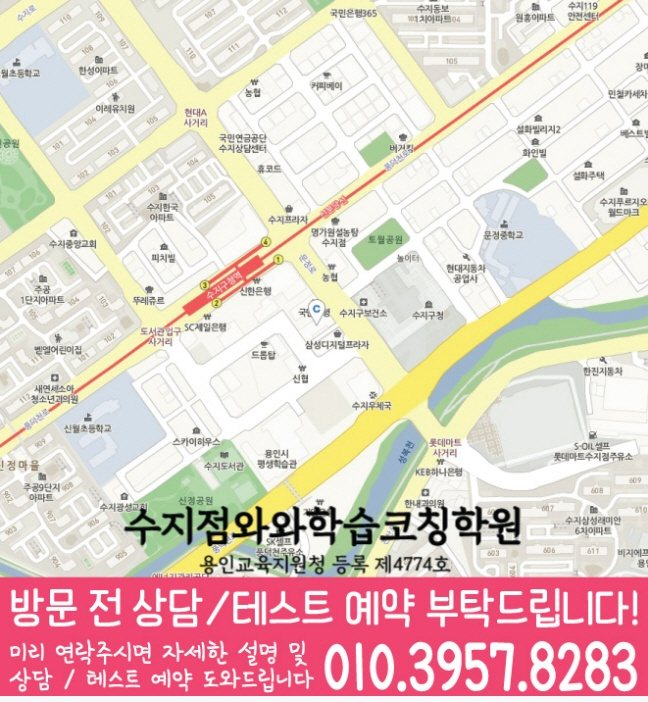

풍덕천동 상담에서는 현재 단원, 학교 진도, 반복 오답, 학습 습관 진단이 실제 문제 풀이와 시험 준비로 이어지는지 확인합니다.
☁️ 경기 용인시 풍덕천동 소수정예 학습관리 학습관리
풍덕천동 소수정예학원 선택 점검
풍덕천동에서 안내하는 지점은 수지점입니다. 소수정예 수업을 알아볼 때 인원과 질문 기회, 과제 확인 방식을 비교하는 점검표입니다. 실제 정원이나 일대일 수업 제공을 확정한 안내는 아닙니다.
경기
용인시
소수정예 학습관리 집중
초등·중등·고등
풍덕천동에서 확인할 수지점 수강·위치 정보
수강 상담에서는 해당 시간대의 실제 인원, 학생별 질문 순서, 과제 피드백과 보호자에게 공유하는 기록을 확인하세요. 수업 이름만으로 인원이나 개별 지도 시간을 판단하지 말고 원하는 과목·학년의 실제 운영 조건을 물어보세요.
- 주소
- 경기 용인시 수지구 문정로 13 중수프라자 503호
- 찾아오는 길
- 수지구청 맞으면 우리은행 건물 / 수지구청역 2번출구에서 2분거리
- 시작 시간 참고
- 평일 오후 3시 이후
- 주말 안내
- 토,일 둘다 가능. 과목별 시간은 상담에서 확인해 주세요.
| 과목 | 안내 학년 | 학년별 수강 안내 |
|---|---|---|
| 영어 | 초1~고3 | 초등 영어 안내중등 영어 안내고등 영어 안내 |
| 수학 | 초등·중등 안내: 초1~중3 | 초등 수학 학년 확인중등 수학 학년 확인고등 수학 안내 · 별도 주소 |
| 국어 | 초1~고3 | 국어 안내 학년 확인 |
| 과학 | 개설 학년 문의 | 과학 안내 학년 확인 |
| 사회 | 초1~고3 | 사회 안내 학년 확인 |
안내 학년과 현재 모집 가능 여부는 구분해서 확인하세요. 실제 요일·시작과 종료 시각·교재·수업 횟수·비용은 희망 과목과 학년을 정해 상담에서 확인할 수 있습니다.
고등 수학 안내는 학습코칭과 W+ 프로그램의 장소·과정이 다를 수 있습니다. 연결된 수강 안내에서 주소와 과정 구분을 확인하세요.
수학 과정 중 별도 장소 안내: 더블유플러스 수지점 — 경기 용인시 수지구 진산로 106 훼미리빌딩 512호,513호,514호. 해당 과정의 수강 안내에서 주소와 학년을 확인하세요.
홈페이지 상담 연락처: 010-6839-8283. 방문 전에는 이 페이지의 주소와 희망 과목·학년을 함께 확인해 주세요.

이미지를 누르면 확대할 수 있습니다. 원본 크기로 전환해 작은 글씨와 전체 내용을 읽어 보세요.

이미지를 누르면 확대할 수 있습니다. 원본 크기로 전환해 작은 글씨와 전체 내용을 읽어 보세요.
찾아오시는 길
와와학습코칭센터 수지점의 위치와 주변 교통편을 확인하세요.
- 주소
- 경기 용인시 수지구 문정로 13 중수프라자 503호
주변 지하철
- 신분당선수지구청역
주변 정류장
- 수지구청.수지우체국
- 수지구청.수지우체국
- 수지구청
- 수지구청역2번출구
- 수지구청역3번출구(마을)
- 수지구청.진산삼성A
- 수지구청역3번출구
- 롯데캐슬하이브엘A
- 수지프라자.한국아파트
- 현대그린프라자
- 삼성6차.하나은행
- 주공아파트
- 롯데캐슬하이브엘A
- 현대그린프라자
- 주공아파트
주변 버스
- 마을
- 14-1 · 17-1 · 2-1 · 58-2 · 1 · 1-1 · 57-1 · 59 · 59-1B · 82 · 82-1 · 11 · 11-1 · 15 · 15-2 · 15-3 · 16 · 5(상현지구대,금호5단지-미금역,2001아울렛) · 5-1 · 802
- 일반
- 68 · 690 · 60-1 · 660 · 670 · 720-3 · 700-2 · 720-1 · 720-2 · 27
- 직행
- 6900
교통편 확인 . 버스 운행과 정차 위치는 이용 전에 확인해 주세요.
Small Group Coaching
풍덕천동 소수정예학원, 인원이 적은 수업일수록 학생별 막힘을 더 빨리 발견해야 합니다.
풍덕천동에서 소수정예학원을 찾는 학부모님은 보통 “우리 아이가 큰 반보다 소수정예 환경이 맞는지”, “개별 관리를 함께 관리해도 되는지”를 고민합니다. 실제로는 과목을 나누기 전에 아이가 공부를 실행하는 방식부터 살펴보는 것이 중요합니다.
소수정예 수업은 단순히 인원만 적은 수업이 아니라, 학생이 어디서 멈추는지 확인하고 바로 질문·풀이·오답 재학습으로 연결하는 관리 방식이 중요합니다. 특히 공부 시간은 길지만 교재·단원별 완료 결과를 설명하기 어려운 경우라면 진도보다 막힌 단계와 완료 기준을 먼저 구분해야 합니다. 풍덕천동 소수정예학원 상담에서는 학생의 현재 단원과 학교 진도, 반복되는 오답 유형을 먼저 확인한 뒤 수업 중 피드백과 과제 점검이 이어지는지 함께 봅니다.
풍천초, 정평초, 이현초, 이현중, 수지중, 정평중 등 주변 학교의 진도와 시험 준비 흐름을 상담 때 함께 확인합니다.
풍덕천동 학생의 수업 중 이해 확인, 플래너 점검, 과제 피드백, 재학습 연결 흐름이 끊기지 않도록 주간 계획 안에서 함께 조정합니다.
풍덕천동 학생의 시험 기간에는 소수정예 학습관리의 공부량이 한쪽으로 쏠리지 않도록 주간 계획을 조정합니다.
Grade Coaching
풍덕천동 학년별 상담 자료와 공부 점검 기준
같은 소수정예 수업이라도 초등·중등·고등 단계에 따라 목표가 달라집니다. 현재 학년과 학교 진도, 최근 학습 기록을 함께 보아야 실제 관리 순서를 정할 수 있습니다.
초등 단계에서는 현재 단원, 학교 진도, 반복 오답, 학습 습관 진단을 확인하고, 수업 중 이해 확인, 플래너 점검, 과제 피드백, 재학습 연결 흐름이 매일 이어지도록 작은 루틴을 만듭니다. 공부 습관이 잡히는 시기라 짧고 꾸준한 관리가 중요합니다.
학교 시험 범위에 맞춰 개별 진단의 취약 단원과 밀착 피드백의 누적 과제를 함께 관리합니다. 내신 대비는 시험 직전이 아니라 평소 누적 관리가 핵심입니다.
개별 진단의 점수 변동 원인과 밀착 피드백의 누적 학습 흐름을 함께 확인합니다. 과목별 우선순위를 잡아 시험 기간 계획이 흔들리지 않게 돕습니다.
Recommended
풍덕천동에서 이런 학생이라면 소수정예 상담을 권합니다.
대형 수업에서 질문을 잘 못 하고 넘어가는 학생풍덕천동 상담에서는 모르는 부분을 숨기지 않도록 수업 중 확인 질문과 짧은 피드백을 반복해 학습 공백을 줄입니다.
혼자 공부하면 계획이 자주 흐트러지는 학생풍덕천동 학생의 기록을 기준으로 주간 플래너와 과제 완료 여부를 함께 확인해 공부량보다 실행 흐름을 먼저 안정시킵니다.
학습 기록과 실제 실행이 어긋나는 학생공부 시간은 길지만 교재·단원별 완료 결과를 설명하기 어려운 경우라면 공부 시간을 늘리기 전에 막힌 단계와 완료 기준부터 다시 정리할 필요가 있습니다.
질문·피드백 방식 비교
수업 인원과 실제 도움을 함께 확인하기
| 확인할 항목 | 상담 질문 | 학생이 남겨 볼 기록 |
|---|---|---|
| 수업 인원 | 희망 요일·과목의 실제 수강 인원과 교사의 지도 범위는 어떻게 되나요? | 혼자 시도한 시간과 설명을 받은 부분을 나눕니다. |
| 질문 기회 | 수업 중 질문하는 방법과 기다리는 동안 할 일은 무엇인가요? | 질문한 내용과 설명 뒤 다시 해 본 결과를 적습니다. |
| 진도 차이 | 같은 공간에서 서로 다른 단원을 공부하면 과제와 설명은 어떻게 구분하나요? | 현재 단원과 먼저 보완할 개념을 구분합니다. |
| 피드백 | 미완료 과제·반복 오답을 언제 어떤 자료로 확인하나요? | 지난번 피드백 중 직접 적용한 한 가지를 남깁니다. |
정원이 적다는 설명만으로 개별 질문 시간이 충분하다고 판단하지 마세요. 원하는 과목·학년의 수업에서 설명을 듣고 다시 혼자 풀어 보는 과정을 어떻게 확인하는지 구체적으로 물어보세요.
상담 뒤 확인
풍덕천동 상담 내용을 다음 공부에 연결하기
상담에서 들은 인원·요일·과제 확인 방법을 같은 기준으로 기록하세요. 학생에게 맞는지는 질문을 할 수 있었는지, 설명 뒤 혼자 해결한 범위가 무엇인지 함께 살펴보면 좋습니다.
학교 자료는 재학 학교에서 받은 시험 범위·진도표·교재를 준비하세요. 학교 이름만으로 별도 반이나 특정 출제 방식이 운영된다고 판단하지 않습니다.
Target Schools
풍덕천동 주변 학교 자료를 상담에 활용하는 방법
풍덕천동 주변 학생들이 상담 전 확인하기 쉽도록, 현재 정리된 학교 목록을 학년 단계별로 나누어 담았습니다.
풍천초
정평초
이현초
이현중
수지중
정평중
상현고
신봉고
홍천고
성복고
풍덕고
수지고
죽전고
학교별 교과 진도, 시험 범위, 수행평가 준비 상황은 학생마다 다르기 때문에 상담 시 현재 교재와 최근 평가지를 함께 확인하면 더 정확한 학습 계획을 세울 수 있습니다.
학교 목록은 상담 준비를 위한 지역 참고 정보입니다. 특정 학교와의 제휴나 별도 반 개설을 의미하지 않습니다. 학생이 학교에서 받은 실제 진도표·평가 안내·사용 교재를 가져와 수업에서 확인할 범위와 집에서 복습할 범위를 나누어 질문하세요.
Checklist
풍덕천동 소수정예학원 상담 전 체크리스트
풍덕천동 소수정예학원 개별 진단 확인 자료: 현재 교재, 최근 시험지, 반복해서 막히는 단원
풍덕천동 밀착 피드백 확인 자료: 과제 기록, 오답 재풀이 여부, 다음 진도 준비 상태
학교별 확인 자료: 풍천초·정평초와 학생이 가져온 실제 진도표·시험 범위
공부 시간은 길지만 교재·단원별 완료 결과를 설명하기 어려운 경우에 해당하는지 보여주는 플래너와 최근 실행 기록
FAQ
풍덕천동 소수정예학원 자주 묻는 질문
풍덕천동 소수정예학원에서는 소수정예 학습관리를 함께 관리하나요?
함께 살펴보되 같은 방식으로 묶지는 않습니다. 개별 진단은 현재 단원, 학교 진도, 반복 오답, 학습 습관 진단을 기준으로, 밀착 피드백은 수업 중 이해 확인, 플래너 점검, 과제 피드백, 재학습 연결을 기준으로 각각 확인한 뒤 학년과 학교 진도에 맞춰 우선순위를 정합니다.
학교 진도와 풍덕천동 소수정예학원 학습 계획은 어떻게 맞추나요?
제공된 학교 자료와 학생이 가져온 실제 진도표를 기준으로 시험 범위와 복습 시기를 확인합니다. 확인되지 않은 학교 일정은 임의로 가정하지 않고 상담 시점의 자료에 맞춰 계획을 조정합니다.
풍덕천동 학생이 소수정예 학습관리 상담 전에 준비할 자료는 무엇인가요?
최근 시험지와 현재 교재, 학교 진도표, 오답노트 또는 자주 틀리는 문제를 준비하면 좋습니다. 자료가 모두 없어도 상담은 가능하며, 확인 가능한 내용부터 소수정예 학습관리의 시작 순서를 정리합니다.
풍덕천동 소수정예학원을 알아볼 때 학교 진도와 학습 계획은 어떻게 맞추나요?
학생이 가져온 실제 진도표와 시험 범위를 현재 교재에 대조한 뒤 복습, 오답 재풀이, 다음 진도의 순서를 정합니다. 확인되지 않은 일정은 임의로 가정하지 않습니다. 풍덕천동 소수정예학원의 실제 적용 범위는 학생의 학년과 현재 학교 진도, 상담 시 확인한 자료에 따라 달라질 수 있습니다.
풍덕천동 소수정예학원에서 상담 전에 어떤 자료를 준비하면 좋나요?
최근 시험지, 현재 교재, 학교 진도표, 반복해서 틀린 문제처럼 학생의 현재 상태를 보여주는 자료부터 준비하면 됩니다. 자료가 모두 없어도 확인 가능한 기록부터 상담할 수 있습니다. 풍덕천동 소수정예학원의 실제 적용 범위는 학생의 학년과 현재 학교 진도, 상담 시 확인한 자료에 따라 달라질 수 있습니다.
상담 참고
풍덕천동 상담 시 확인할 소수정예 학습 변화
시험 범위와 남은 기간을 기준으로 개별 진단과 밀착 피드백의 점검 순서를 나누면 한쪽 과목에 계획이 쏠리는 것을 줄일 수 있습니다.
풍덕천동 상담에서는 공부 시간을 길게 적기보다 교재·단원·분량·완료 기준이 보이는 계획인지 확인합니다.
과제를 했는지만 묻기보다 개별 진단에서 막힌 단계와 다시 풀어본 기록을 확인해야 다음 계획을 구체적으로 조정할 수 있습니다.
다른 지역 안내
풍덕천동 주변 소수정예학원도 함께 보기
같은 시군구와 가까운 지역의 소수정예 상담 페이지로 자연스럽게 이동할 수 있게 정리했습니다.
Page Route
풍덕천동 페이지 이동
현재 페이지와 연결된 상위 페이지를 빠르게 확인할 수 있습니다.
수지점 지점 사진